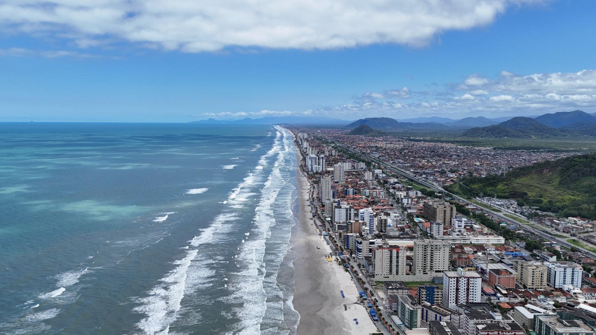

A área inicial de Mongaguá, situada entre os rios Mongaguá e Aguapeú e habitada pelos índios guaranis, começou a ser percorrida em 1532 por colonizadores e missionários portugueses. O local tornou-se pouso de viajantes que desfrutavam, sobretudo, da boa qualidade da água e da abundância de peixes. A região, porém, só veio se desenvolver de forma mais efetiva, no século XX como balneário. Tornou-se distrito do município de Itanhaém em 24 de dezembro de 1948, com território formado pelo povoado de mesmo nome, acrescido de terras dos distritos sedes de Itanhaém e São Vicente. Em 18 de fevereiro de 1959, foi elevado a município autônomo.
Fonte: Fundação SEADE - 2006